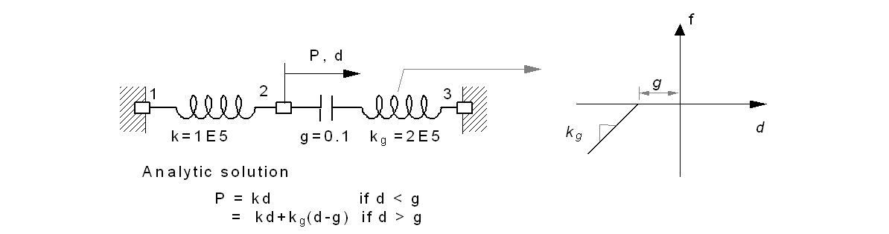

E.8 Interface Modeling using Spring and Interface Elements
E.8.1 Spring and Interface Element
그림과 같이 순수 전단 상태에 놓인 스프링(Spring, EarthSpring) 및 interface 요소(IL22, ILL33) 의 응답을 검증하였다.
Figure E.8.1 Verifcation Models of Spring and Interface Elements
변위제어로 \(\small \Delta = 0.5\)까지 계산했을 때의 응답은 표와 같이 모두 동등하게 계산되어야 한다.
Table E.8.1 Analysis Results
| Time | Displacement | Force(IAX4)* | Force(Other Elements)* | strain | stress |
|---|---|---|---|---|---|
| 0.1 | 0.05 | 0.7854 | 0.25 | 0.05 | 0.25 |
| 0.2 | 0.1 | 1.5708 | 0.5 | 0.1 | 0.5 |
| 0.3 | 0.15 | 2.3562 | 0.75 | 0.15 | 0.75 |
| 0.4 | 0.2 | 3.1416 | 1 | 0.2 | 1 |
| 0.5 | 0.25 | 2.87983 | 0.91667 | 0.25 | 0.91667 |
| 0.6 | 0.3 | 2.61796 | 0.83333 | 0.3 | 0.83333 |
| 0.7 | 0.35 | 2.3562 | 0.75 | 0.35 | 0.75 |
| 0.8 | 0.4 | 2.09443 | 0.66667 | 0.4 | 0.66667 |
| 0.9 | 0.45 | 1.83257 | 0.58333 | 0.45 | 0.58333 |
| 1 | 0.5 | 1.5708 | 0.5 | 0.5 | 0.5 |
* Sum of nodal force when Interface element
Input file
-
V-Spring.inp : Spring
-
V-EarthSpring.inp : EarthSpring
-
V-I2D4.inp : I2D4 (2+2 2-dimensional Interface Element) using uncoupled material
-
V-IAX4.inp : IAX4 (2+2 Axysymmetric Interface Element) using uncoupled material
-
V-I3D6.inp : I3D6 (3+3 3-dimensioal Interface Element) using uncoupled material
-
V-I3D8.inp : I3D8 (4+4 3-dimensioal Interface Element) using uncoupled material
-
V-I2D4-C.inp : I2D4 (2+2 2-dimensional Interface Element) using cohesive material
-
V-IAX4-C.inp : IAX4 (2+2 Axysymmetric Interface Element) using cohesive material
-
V-I3D6-C.inp : I3D6 (3+3 3-dimensioal Interface Element) using cohesive material
-
V-I3D8-C.inp : I3D8 (4+4 3-dimensioal Interface Element) using cohesive material
E.8.2 Adhesive Joint
두 번째 예제는 보수보강분야에서 기초실험으로 활용되는 부착이음(adhesive joint)에 대한 해석해를 대상으로 한다. 부착이음은 그림에 나타낸 것과 같이 경계조건에 따라 pull-push, pull-pull joint로 구분할 수 있다. Yuan et al.(2001)과 Wu et al.(2002)은 (1) 모재(adherent)는 균질하고 선형탄성이고, (2) 모재의 휨은 무시하고, 단면에 수직응력은 일정하게 분포하며, (3) 접착층(adhesive)에는 전단력만 작용하고, 두께와 폭은 일정하다는 가정을 통해 그림과 같이 pull-push 및 pull-pull 조건의 이상화된 부착이음에 대해 부착층의 부착모델이 선형 및 이중선형관계에 있을 경우에 대한 총 4종의 해석해를 유도하였다.

Figure E.8.2 Types of Adhesive joints
Figure E.8.3 Analytic solution of adhesive joints (Wu et al. ,2002)

Figure E.8.4 Analytic solution of pull-push adhesive joints with Model II(Wu et al. ,2002)
본 검증예제에서는 그림 E.10.4와 같이 pull-push 조건을 10 cm × 10 cm 부착이음(부착폭 4cm, 부착길이 35cm)에 대해 스프링 요소(Spring) 및 경계면 요소(IL22)를 이용해 경계면을 모델링한 경우를 해석해와 비교하였다. 상하부에 배치된 CFRP 판과 콘크리트는 트러스 요소(truss)요소로 모델링하였으며, 그림 xx는 이중선형 부착모델을 갖는 pull-push 조건의 부착이음에 대한 해석해가 제시되어 있다.
Figure E.8.5 Analysis Model
Table E.8.2 Properties of Analysis Model (Adhesive length 35cm)
| Classification | Material Properties | Remark |
|---|---|---|
| CFRP plate | E1=2.35E6 kgf/cm2 b1=4cm , t1=0.0167cm |
T3D2 Element |
Concrete ( Strength 270kgf/cm2 ) |
E2=246,475kgf/cm2 b2=10cm, t2=10cm |
T3D2 Element |
| Bon-slip model(Model II) | δ1=0.02cm, δf = 0.08cm, τf = 40kgf/cm2 |
Spring or I2D4 Element |
해석해의 경우 극한하중은 1406.4 kgf으로 계산되며, 그림 E.10.6(a)에서 해석해 및 Spring 요소 모델과 경계면 요소의 하중-변위 곡선을 비교하였다. 그림 E.10.6(b)-E.10.6(d)는 해석해 및 수치해에서 하중증가에 대한 경계면의 전단 부착응력의 분포를 도시한 것이다. 그림 E.10.7는 각 수치해와 해석해의 전단부착응력분포를 비교한 것이다. 하중 전달에 있어 약간의 시간지연효과가 발생하였다. Spring 요소를 모델링한 경우 최대하중이 1400kgf/cm2에서 수렴하지 않기 때문에 1300 kgf/cm2까지 해석하였다.

Figure E.8.6 Analysis Results
Input file
-
Adhesive-Spring.inp : Using spring elemnt
-
Adhesive-I2D4-U.inp : Using interface element using uncoupled UGeneric material
-
Adhesive-I2D4-V.inp : Using interface element using uncoupled von Mises material
-
Adhesive-I2D4-C.inp : Using interface element using Cohesive material
E.8.3 Nonlinear Analysis of Composite Beam
그림과 같이 단순지지된 합성보의 거동을 두 가지 하중 조건에 따라 해석하였다. 상하에 steel 재질의 보는 보요소로 모델링하였으며, 경계면은 부착거동에 따라 BeamLink, RigidLink, BeamJoint 등으로 모델링하였다. 다음은 해석 경우에 대한 개요 및 모델링 시 주의사항을 나타낸 것이다.
-
완전부착(Full Bond): Beam + BeamLink 구속조건
- BeamLink 구속조건에 의해
\(\small v_{1} = v_{2}\), \(\small u_{1} = u_{2} + h\theta\), \(\small \theta_{1} = \theta_{2}\) 조건 부과
- BeamLink 구속조건에 의해
-
비합성(No Bond): Beam + RigidLink 구속조건
- RigidLink 구속조건에 의해
\(\small v_{1} = v_{2}\) 조건 부과 - 주의사항: LC1 해석 시 상하 절점에 동일한 rotation 부과
- RigidLink 구속조건에 의해
-
부착거동: Beam + RigidLink 구속조건 + Spring
- RigidLink 구속조건에 의해
\(\small v_{1} = v_{2}\) 조건 부과 - Rigid arm을 갖는 spring 요소를 통해 \(\small \delta = u_{1} - u_{2} + h_{1}\theta_{1} + h_{2}\theta_{2}\)로 계산되는 변형에 대해 전단방향 비선형 spring(\(\small f = f(\delta)\), \(\small f\)는 spring force) 부과
- 주의사항: LC1 해석 시 상하 절점에 동일한 rotation 부과
- RigidLink 구속조건에 의해
Figure E.8.7 Compsite beam
요소의 크기는 50mm로 상하의 보요소가 각 40개, Spring 요소 41개가 사용되었으며, BeamLink, RigidLink 역시 41개 절점쌍을 연결한다(Figure E.8.7 참조).
Figure E.8.8 Modeling
Figure E.8.9 Analysis Results of LC1
Figure E.8.10 Analysis Results of LC2
Input file
-
CB-F.inp : Full Bond
-
CB-N.inp : No Bond
-
CB-B.inp : Partial Bond (Bonded Case
E.8.4 Beam on Elastic foundation
무한탄성지반(infinite elastic foundation)에 놓인 보에 대해 집중하중 및 분포하중이 가력되었을 경우에 대해 해석을 수행하였다(Figure E.8.11). 집중하중이 가력된 경우에 대해서는 이론해와 비교하였다.
Figure E.8.11 Infinite elastic foundation
수치모델은 충분히 큰 길이(여기에서는 총 600m)를 선택하여 보요소 및 수직스프링으로 모델링하였다(Figure E.15.12).

Figure E.8.12 Modeling
그림 E.8.13은 집중하중이 가해진 경우에 대해 이론해 및 수치해를 비교한 것으로 잘 일치함을 알수 있다. E.8.14는 200m의 수직 분포하중이 가력될 때의 수치해를 나타낸 것이다.
Figure E.8.13 Analysis Result of Case 1
Figure E.8.14 Analysis Reuslt of Case 2
□ Remark. Infinite beam on elastic foundation의 해석해
(1) Case 1 : Static concentric load
탄성지반위에 무한한 길이를 가지는 보(infinite beam on elastic foundation)에 집중하중이 작용하는 경우 지배방정식은 다음과 같다.
\(\small x \geq 0\)인 구간에 대해 만족하는 해는
이고, symmetry 조건과 평형조건
을 적용하여 해를 구한다;
(2) Case 2 : Harmonic load
집중하중으로 동적 가진이 되는 경우 운동방정식을 다음과 같다.
\(\small x = 0\)에서 조화가진(harmonic excitation)을 주었다면,
이고, 이에대한 동적응담은 \(\small y(x,t) = \widehat{y}(x,\omega)exp(i\omega t)\)로 표현할 수 있다. 따라서, 주파수 영역에서 지배방정식을 표현할 수 있다;
where
위에서 \(\small D(\omega)\)는 동적강성이다. 위 식은 정적 처짐과 같은 방식으로 해를 구성하면 주파수 영역의 해 \(\small \widehat{y}(x,\omega)\)는 다음과 같다;
따라서, 시간영역의 해는 다음과 같이 표현할 수 있다;
Arbitary excitation이 입력되는 경우는 위식에 근거하여 Fourier transform을 실시하면 해를 계산할 수 있다.
Input file
- elfound. inp
E.8.5 Simple Gap
첫 번째 예는 그림과 같이 스프링 및 gap을 갖는 구조에 대해 해석을 수행하여 해석해와 비교하였다.

Figure E.8.15 Simple Gap Example

Figure E.8.16 Analysis Result at Node 2
Input file
- gap1.inp
E.8.6 Beam on gapped spring (underconstruction)

Figure E.8.17 Analysis Model
E.8.7 Pounding During Earthquake (under construction)

Figure E.8.18 Analysis Model
References
-
Yuan, H., Wu, Z. S. and Yoshizawa, H. (2001) "Theoretical Solutions on Interfacial Stress Transfer of Externally Bonded Steel/Composite Laminates", Journal of Structural Mechanics and Earthquake Engineering, JSCE, No. 675/1-55, pp. 27-39
-
Zhishen Wu, Hong Yuan, Hedong Niu (2002), "Stress Transfer and Fracture Propagation in Different Kinds of Adhesive Joints", Journal of Engineering Mechanics, ASCE, Vol. 128, No. 5, May 2002., pp. 562-573
-
Salari, M.R., Spacone, E., Shing P.B., and Frangopol D.M. (1998). "Nonlinear Analysis of Composite Beams with Deformable Shear Connections." ASCE Journal of Structural Engineering, Vol. 124, No. 10, P. pp. 1148-1158.
-
M. Hetenyi, an arbor (1946) "Beams on elastic foundation", The university of michigan press.